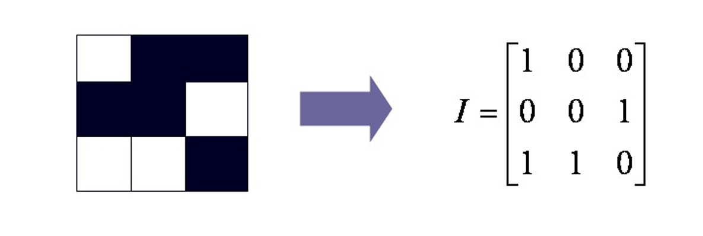
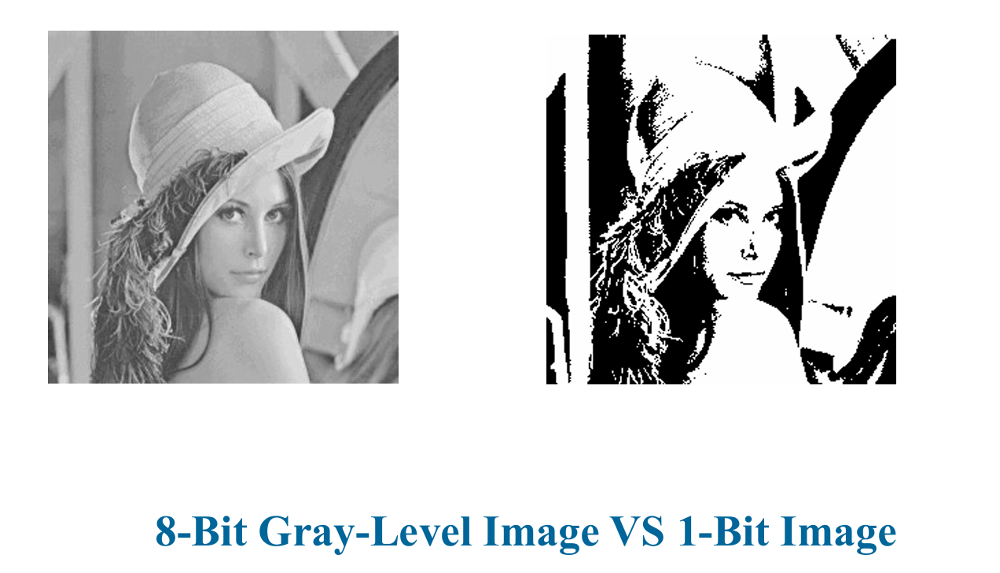
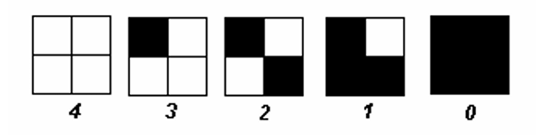
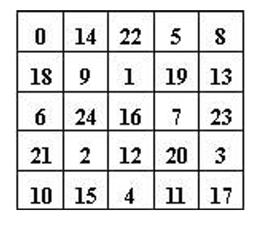
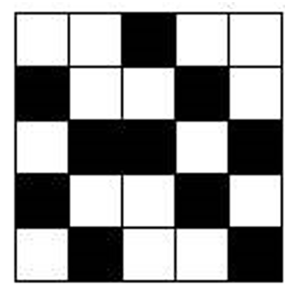
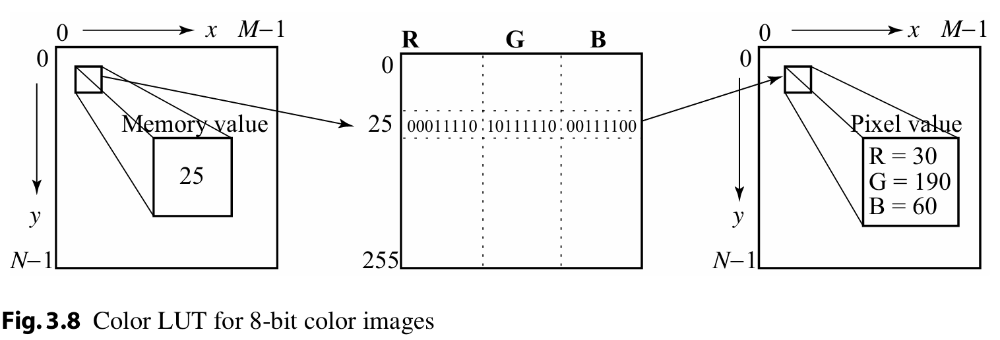
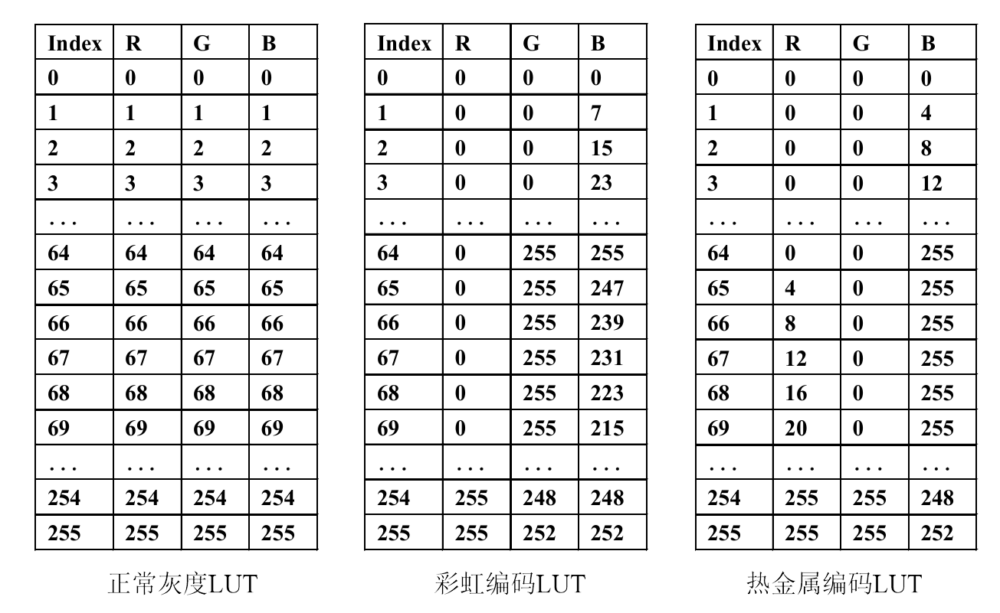
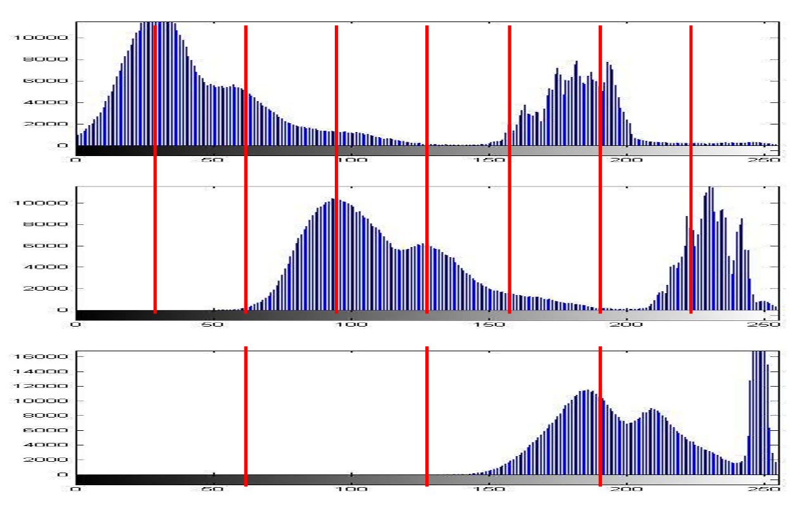
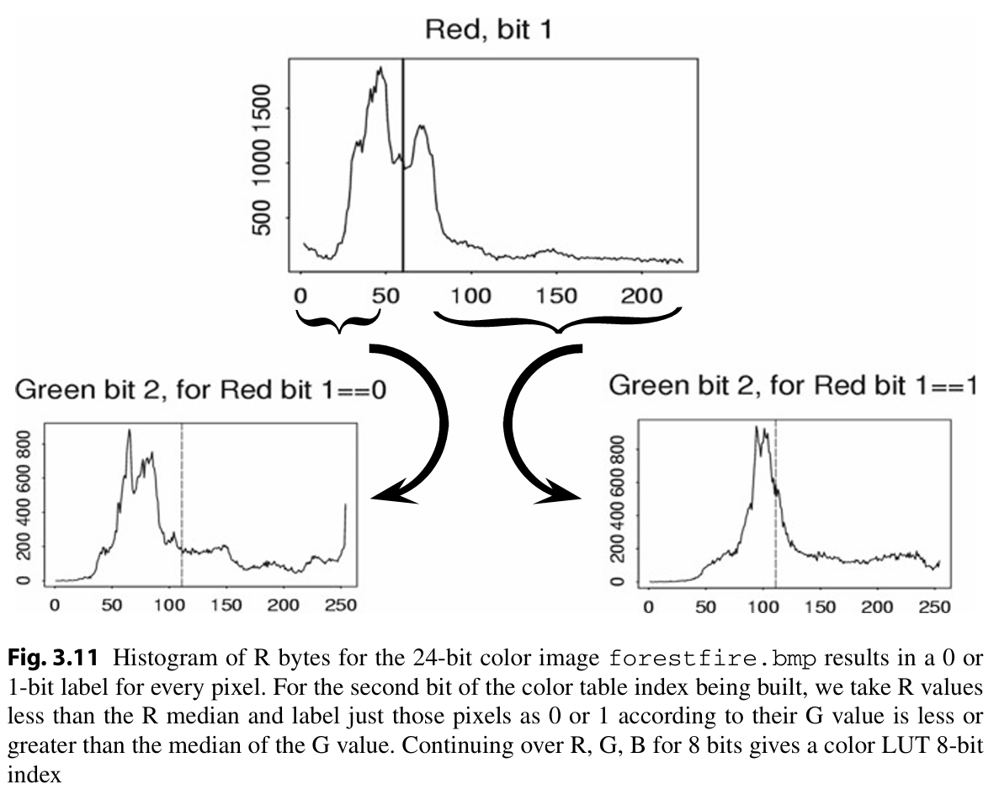

Graphics and Image Data Types¶
约 2058 个字 10 行代码 10 张图片 预计阅读时间 10 分钟
1-Bit Image¶
1-Bit Image 也叫做二值图像（Binary Image）或者单色图像（Monochrome Image），是一种只包含黑白两种颜色的图像。

8-Bit Image¶

整个图像可以理解为由像素值构成的二维矩阵，这种数据结构被称为位图（Bitmap）。
Print¶
Question
如何将 8-Bit Image 以 1-Bit Image 的形式打印出来？
先给出一个概念：DPI（Dots Per Inch）是打印机的分辨率单位，表示每英寸上的点数。
打印这类图像（如位图）时，由于打印机本身的色彩或灰度精度有限（如黑白打印机只能输出纯黑或纯白），直接输出可能导致颜色过渡生硬或细节丢失。此时需要通过抖动（Dithering）技术，将强度分辨率（即颜色/灰度的精细程度）转换为空间分辨率（通过像素点的空间分布模拟颜色层次）。
Dithering¶
核心策略是通过将单个像素值替换为更大的图案（如 2×2 或 4×4 网格），使印刷网点数量近似模拟传统半色调印刷（halftone printing）中使用的可变尺寸墨点（例如报纸照片印刷）。其本质是将色彩分辨率转换为空间分辨率。
-
数学表征：一个 N×N 矩阵可呈现 N²+1 级灰度
2×2 图案可呈现 5 种灰度等级

对于 8-Bit Image，可以通过抖动技术将其转换为 1-Bit Image。首先将图像像素值从 0~255 重新映射至 0~4 范围，方法是通过整数除法（除以 256/5）。
为什么是 256/5？
因为 5 是 2×2 矩阵的可以表示的最大灰度等级，要使得 0~255 范围内的值映射到 0~4，需要将 256 等分为 5 份。
- 若像素值为 0，则在印刷输出的 2×2 区域内不打印任何网点；
- 若像素值为 4，则打印该区域内的全部 4 个网点。
核心规则
阈值判定：若像素强度值 大于 抖动矩阵（dither matrix）对应位置的阈值，则在矩阵条目位置打印实心网点。
- 这里的抖动矩阵例如：
$$ \begin{bmatrix} 0 & 2 \ 3 & 1 \end{bmatrix} $$
像素扩展：将每个像素替换为 n×n 点阵，导致输出图像尺寸显著增加。例如：
- 原始图像为 N×N 像素；
- 使用 4×4 点阵替换每个像素时，输出图像尺寸将变为 4N×4N，即扩大16倍！
优化 | Standard Pattern¶
在刚刚的方法里，我们的输出图像尺寸增大了很多，这是不可接受的。因此，我们需要对这个方法进行优化，避免输出图像尺寸的显著增加。
我们采用 标准阈值矩阵（Standard Pattern） 方法。
- 预存一个与目标输出尺寸相同的整数矩阵（0-255），称为标准模式矩阵。
- 操作规则：将灰度图像矩阵与标准模式矩阵逐位置比较，当灰度值 > 模式矩阵对应位置的阈值时，打印实心网点。
例如，对于一个25灰度等级的图像，标准模式矩阵如下：

当我们的灰度值为 15 时，输出的图像如下：
Print an image (\(600 \times 450 \times 8\)bit) on a paper (\(8 \times 6\) inch) by a printer with \(300 \times 300\) DPI, what’s the size of each pixel (dots)?
问的是每一个像素要打多少点
- Paper Size: \(8 \times 6\) inch
- DPI: \(300 \times 300\)
-
Dots of paper: \(8 \times 300 \times 6 \times 300\)
-
Dots of image: \(600 \times 450\)
- Size of each pixel: \(\frac{8 \times 300 \times 6 \times 300}{600 \times 450}=16\)
这样子打出来的图像只有17个灰度等级，这就是产生失真的原因。
24-Bit Image¶
24-Bit Image 是一种真彩图像，每个像素由 RGB 三个通道组成，每个通道占 8 位，共 24 位。
很多24-Bit Image 实际上以 32 位的形式存储，其中 8 位用于存储 \(\alpha\) 值及特殊效果信息，例如透明度标识符(transparency flag)。
- α通道功能：
- 透明度控制：α值定义像素的不透明度（Opacity），范围通常为 0（全透明） 至 255（完全不透明）。
- 混合公式：半透明图像颜色 = 源图像颜色 × (1 – 透明度) + 背景图像颜色 × 透明度
8-Bit Color Image¶
8-Bit Color Image 是一种伪彩图像，每个像素由 8 位的索引值表示，对应调色板中的一种颜色。
核心机制：
- 索引颜色与查找表（Lookup Table/Palette）
- 图像数据不直接存储实际颜色值，而是存储索引字节（0-255），每个索引对应调色板中的一条 3字节RGB颜色（如索引42 → RGB(120,200,50)）。

- **技术优势**
- 将颜色存储空间从每像素3字节压缩至1字节（256色），显著减少文件体积。
- 只要更换调色板，即可实现图像颜色风格的**快速切换**。

常见查找表：

调色板生成算法¶
- 关键任务：从全色域（16,777,216色）中选取最具代表性的256色。
均匀切片法（Equal Slicing）¶
将RGB颜色立方体在R、G、B三个维度上切割，基于人眼对红（R）、绿（G）更敏感的特性，将 8 位颜色表示中 R，G，B 的分配设为 3:3:2。

但是在这种简单的颜色量化方法中，相邻像素的微小RGB变化可能导致索引值突变，产生边缘伪影（Edge Artifacts），是不好的，所以我们引入 Median-cut 算法。
Median-cut算法¶
Median-cut算法通过中位切分最小化子区域内的颜色方差，最大化子区域间差异，将量化误差集中在人眼不敏感区域，从而减少伪影。

- 1. 定位最小包围盒（Find the smallest box）
- 目标：确定包含图像中所有颜色的最小RGB立方体。
- 示例：若图像颜色范围为R∈[50,200]、G∈[30,180]、B∈[0,255]，则包围盒定义为该区间的三维空间。
- 意义：缩小后续处理范围，减少无效计算。
- 2. 沿最长维度排序（Sort along the longest dimension）
- 动态通道选择：
计算包围盒各维度（R/G/B）的跨度（Max - Min），选择跨度最大的通道作为切分轴。- 示例：若R跨度最大（图3.11中R通道直方图分布广），则优先沿R轴排序颜色。
- 排序规则：将包围盒内所有颜色的选定通道值升序排列，准备中位切分。
- 3. 中位切分（Split at the median）
- 中位点定义：
找到排序后颜色列表的中位点，使得前半部分与后半部分颜色数量相等（非几何中点）。- 直方图辅助：通过累计像素计数快速定位（如图3.11中垂线所示）。
- 切分动作：
将包围盒分为两个子区域：- 子盒1：原盒前半部分（R ≤ 中位值）
- 子盒2：原盒后半部分（R > 中位值）
- 4. 递归迭代（Repeat until 256 regions）
- 递归条件：对每个子盒重复步骤2-3，直至总区域数达到目标（如256个）。
- 终止逻辑：
- 每次切分将区域数翻倍（2 → 4 → 8 → ... → 256）。
- 优先切分高密度区域：始终选择当前盒中最长维度操作，确保颜色密集区域被细化。
- 5. 计算代表色（Assign representative color）
- 均值计算：对每个最终子盒内的所有颜色，计算其RGB均值作为代表色。
- 公式：
[ R_{\text{rep}} = \frac{1}{N}\sum R_i, \quad G_{\text{rep}} = \frac{1}{N}\sum G_i, \quad B_{\text{rep}} = \frac{1}{N}\sum B_i ] - 作用：代表色是子盒内颜色的统计中心，最小化局部量化误差。
- 公式：
- 6. 像素映射与LUT构建（Pixel assignment & LUT）
- 欧氏距离匹配：
将每个原始像素的RGB值与所有代表色计算欧氏距离，选择最近的代表色作为其映射目标。- 距离公式：
[ d = \sqrt{(R - R_{\text{rep}})^2 + (G - G_{\text{rep}})^2 + (B - B_{\text{rep}})^2} ]
- 距离公式：
- 构建LUT：
- LUT结构：256行 × 3列（每行存储一个代表色的24位RGB值）。
- 索引存储：图像像素值替换为对应LUT索引（0-255），实现8位压缩。